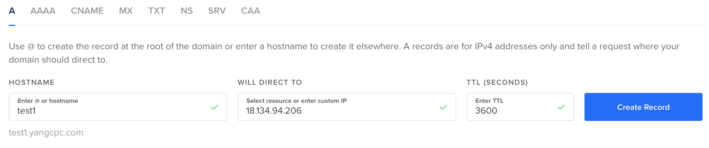

SSE Deployment
SSE service could be deployed by both docker-compose and MiCADO.
Deployment SSE service with docker-compose
It is possible to deploy all the SSE components on a single host using docker-compose. The following part describes how to do that.
0. Preliminaries
0.1 Create an instance from either AWS or Azure
For instance, you could select Instance Image & Instance Type as "Ubuntu Server 20.04 LTS" and "t2.micro" on AWS respectively.
0.2 docker installation
SSH to the instance that you created in #0.1 and execute the following commands to install docker.
1. sudo apt-get update
2. sudo apt install apt-transport-https ca-certificates curl gnupg-agent software-properties-common
3. curl -fsSL https://download.docker.com/linux/ubuntu/gpg | sudo apt-key add -
4. sudo add-apt-repository "deb [arch=amd64] https://download.docker.com/linux/ubuntu $(lsb_release -cs) stable"
5. sudo apt update
6. sudo apt install docker-ce docker-ce-cli containerd.io
7. sudo systemctl status docker
0.3 docker-compose installation
SSH to the instance that you created in #0.1 and execute the following commands to install docker-compose.
Install the old version of docker-compose:
1. sudo curl -L "https://github.com/docker/compose/releases/download/1.29.2/docker-compose-$(uname -s)-$(uname -m)" -o /usr/local/bin/docker-compose
2. sudo chmod +x /usr/local/bin/docker-compose
3. docker-compose --version
Install the up-to-date version of docker compose:
1. mkdir -p ~/.docker/cli-plugins/
2. curl -SL https://github.com/docker/compose/releases/download/v2.3.3/docker-compose-linux-x86_64 -o ~/.docker/cli-plugins/docker-compose
3. chmod +x ~/.docker/cli-plugins/docker-compose
4. sudo chown $USER /var/run/docker.sock
5. docker compose version
Note that you could install any docker-compose version. The following part of this chapter uses the old docker-compose version. If you install the up-to-date version, few following commands may slightly different, such as docker compose up -d instead of docker-compose up -d.
0.4 DNS (Optional)
If you would like to deploy a TLS layer in SSE service, you must set up DNS.
For instance, you will achieve a public ip address (i.e. 18.134.94.206) once you finish #0.1.
Then, go to digitalocean and bind your domain name with the public ip address. 
1. Get the docker-compose definition from the repository
git clone https://gitlab.com/asclepios-project/sse-deployment
Two docker-compose files could be achieved, namely "docker-compose-without-tls.yml" and "docker-compose-tls.yml".
The "docker-compose-without-tls.yml" file involves the definitions of the SSE server, SSE TA, SSE client, MinIO Server, and TEEP deployer server. While, the "docker-compose-tls.yml" file involves the definitions of the SSE server, SSE TA, SSE client, certbot, ta-proxy (Nginx), MinIO Server, and TEEP deployer server. If you do not need to use SGX for SSE TA, and/or use MinIO Server, you can customize the docker-compose file by removing teep-server and/or minio definitions.
The main difference between these two files is that "docker-compose-tls.yml" adds a TLS layer in order to increase security level on SSE TA.
2. Configure the environmental variables
cd sse-deployment
If using SGX at SSE TA:
cp template_sgx.env .env
If not using SGX at SSE TA:
cp template_nonsgx.env .env
Edit the .env file to modify the configurations and more details could be found in SSE_deployment_manual.
2.1 For speed up the environmental variables configuration, you can do the following.
2.1.1 If you don't want to create a TLS layer for SSE service, then do the following steps.
nano example-without-tls.env
Then, change the following variables to your own environmental variables.
TA_ALLOWED_HOSTS="YOUR_INSTANCE_PUBLIC_IP_ADDRESS ta"
SSE_SERVER_ALLOWED_HOSTS="YOUR_INSTANCE_PUBLIC_IP_ADDRESS sse"
MINIO_URL=YOUR_INSTANCE_PUBLIC_IP_ADDRESS:9000
SSE_CLIENT_ALLOWED_HOSTS="YOUR_INSTANCE_PUBLIC_IP_ADDRESS client"
SSE_CLIENT_TA_URL=http://YOUR_INSTANCE_PUBLIC_IP_ADDRESS:8000
SSE_CLIENT_SSE_URL=http://YOUR_INSTANCE_PUBLIC_IP_ADDRESS:8080
SSE_CLIENT_CP_ABE_URL=http://YOUR_INSTANCE_PUBLIC_IP_ADDRESS:8084
Once it's finished, execute the following command.
mv example-without-tls.env .env
2.1.2 If you want to create a TLS layer for SSE servic, do the following steps.
nano example-with-tls.env
Then, change the following variables to your own environmental variables.
TA_ALLOWED_HOSTS="YOUR_DOMAIN_NAME ta"
SSE_SERVER_ALLOWED_HOSTS="YOUR_INSTANCE_PUBLIC_IP_ADDRESS sse"
SSE_SERVER_TA_SERVER=https://YOUR_DOMAIN_NAME:443
MINIO_URL=YOUR_INSTANCE_PUBLIC_IP_ADDRESS:9000
SSE_CLIENT_ALLOWED_HOSTS="YOUR_INSTANCE_PUBLIC_IP_ADDRESS client"
SSE_CLIENT_TA_URL=https://YOUR_DOMAIN_NAME:443
SSE_CLIENT_SSE_URL=http://YOUR_INSTANCE_PUBLIC_IP_ADDRESS:8080
SSE_CLIENT_CP_ABE_URL=http://YOUR_INSTANCE_PUBLIC_IP_ADDRESS:8084
Once it's finished, execute the following command.
mv example-with-tls.env .env
3. Build the docker images
sudo docker-compose build
If you just would like to deploy the SSE service, you can skip this part -"Build the docker images".
The following part will describe how to run SSE service with "docker-compose-without-tls.yml" (#4.1) and "docker-compose-tls.yml" (#4.2) separately.
4.1 Run SSE service with docker-compose-without-tls.yml
Rename "docker-compose-without-tls.yml" to "docker-compose.yml"
mv docker-compose-without-tls.yml docker-compose.yml
Then, start the SSE service.
docker-compose up
4.2 Run SSE service with docker-compose-tls.yml
4.2.1 Update the certbot entry in ‘docker-compose-tls.yml’ with email and domain
First, edit ‘docker-compose-tls.yml’ with your favourite editor
nano docker-compose-tls.yml
Scroll down to certbot and modify the --email and -d parameters. Save the file.
--email YOUR_EMAIL_ADDRESS
-d YOUR_DOMAIN_NAME
Rename ‘docker-compose-tls.yml’ to ‘docker-compose.yml’
mv docker-compose-tls.yml docker-compose.yml
4.2.2 Update the 'nginx.http' file with the domain name
nano nginx.http
server_name YOUR_DOMAIN_NAME
Rename ‘nginx.http’ to ‘nginx.conf’
mv nginx.http nginx.conf
4.2.3 Run the SSE service
sudo docker-compose up -d
4.2.4 Update the ‘nginx.https’ file with the domain name
nano nginx.https
server_name YOUR_DOMAIN_NAME
/etc/letsencrypt/live/YOUR_DOMAIN_NAME/fullchain.pem;
/etc/letsencrypt/live/YOUR_DOMAIN_NAME/privkey.pem;
Rename ‘nginx.conf’ to ‘nginx.http’
mv nginx.conf nginx.http
Rename ‘nginx.https’ to ‘nginx.conf’
mv nginx.https nginx.conf
4.2.5 Restart the Nginx service
docker-compose restart ta-proxy
P.S. If you deploy all the SSE components on a single host, you will need to change SSE client port number (in docker-compose-tls.yml) from (-80:80) to (-81:80) in order to avoid port conflicts with ta-proxy container.
Deployment SSE service using MiCADO
0. Preliminaries
0.1 MiCADO installation
The details of MiCADO installation can be found in MiCADO installation , but two steps below need to be updated during the installation.
i. Download the ansible playbook from the develop branch
git clone https://github.com/micado-scale/ansible-micado
cd ansible-micado
git checkout develop
ii. ‘cert-manager.yaml’ and ‘traefik-rbac.yaml’ need to be installed on the MiCADO master before the deployment.
(1) SSH to MiCADO master node.
(2) Cope ‘cert-manager.yaml’ and ‘traefik-rbac.yaml’ files to any directory in MiCADO master node.
(3) Run the commands below.
sudo kubectl apply -f cert-manager.yaml
sudo kubectl apply -f traefik-rbac.yaml
1. Deployment using MiCADO
Four ADT templates (below) could be found in sse-deployment.
Template_SSE_without_TLS_AWS.yaml
Template_SSE_without_TLS_Azure.yaml
Template_SSE_with_TLS_AWS.yaml
Template_SSE_with_TLS_Azure.yaml
The next step is to configure the ADT file and then run the command on Ansible Remote machine to deploy the SSE service (Some tutorials of how to deploy applications on MiCADO could be find in Tutorials).
For further details, you can also read about the SSE service deployment in SSE_deployment_manual.
P.S. The SSE ADT examples and SSE service test reports could be found in the "ADT examples" folder of sse-deployment.